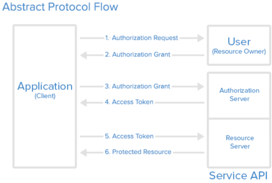
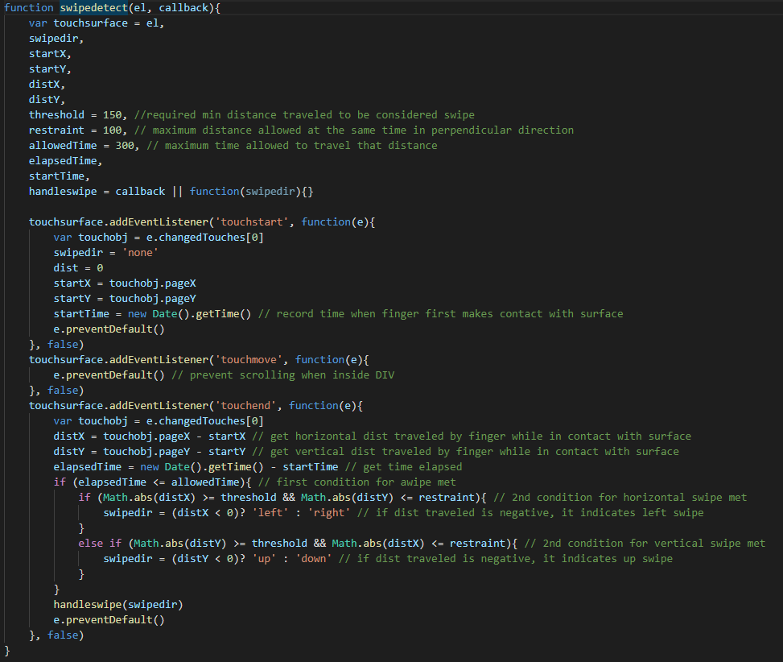
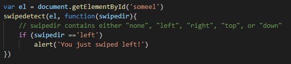

Pamaf is a student project in which the player fights the other teachers in a Pac-man style. This document
describes the main ideas/concepts, as well as the User Experience and the way in which the authors
collaborated.
2. Introduction
Games have always been a way in which people had fun. Originating with Pac-man, Pamaf wants to achieve the
same greatness by adding a twist to the game: phantoms become teachers and our yellow little friend is
represented by our profile picture. This way, students are able to face one of their biggest nightmares in
a fun and addicting way.
3. Summary
We have started from the idea that we would like a simple interface in which the main point is for the
players to get to the game as fast as possible. We did respect that, but we have also added a few other
pages, like the History, Rules or Scoreboard. There is also a Contact page if you ever feel the need to
reach us.
There have been ups and downs and a lot of changes during the first phases of development, but overall we
think that we've done a good job on having a layout that is fast, good on the eye and also easy to
understand and easy to navigate.
4. Intermediate stages
Connected account to external APIs (Facebook, Instagram, Github) to enable calls on them for our website clients to connect via Facebook, Instagram or Github.
Implementation of login functionality through external APIs.
Game addition and its features (levels, scores, collected data, wins, defeats…)
Feature of multiplayer game being started in a way inspired from JackBoxGames
where a new game room generates an unique token which is latar being used by others to access the room.
In our game, players can access a game room with a key, whether it's generated by another player or generated
by the player himself. Game style is each player plays a match separately whenever he wants.
This was inspired by other apps such as DrawMyThing where a game is represented by a cycle of draw-and-guess
between players that have chosen to play together (they can hold many games “open” at the same time)
Implementation of game functionalities: start game, create room, enter room.
Implementation of game options functionalities: mute / unmute sound, change language.
Implementation of data extraction from database for scoreboard and profile sections.
Connection to a database in order to store our clients data and statistics.
Feature added of data being collected via database calls and updates. Data is being updated for singleplayer
mode as one user can log on later for a further progress of the game. Data is also updated for multiplayer games,
all users being remembered for their best score on the scoreboard page. (+ wins/defeats, etc)
5. Local/external data usage (Data modelling)
Client data is stored on a database accessed in a easy manner by us developers on our back-end module (php based server-side).
As a consequence of using an external website for our users to log on our application, we have to execute calls on external APIs, such as:
In the next segment, we will talk about how we are going to use the Facebook API in order to authenticate into our website using your Facebook profile.
The Facebook SDK for JavaScript doesn't have any standalone files that need to be downloaded or installed, instead you simply need to include a short piece of regular JavaScript in your HTML that will asynchronously load the SDK into your pages. The async load means that it does not block loading other elements of your page.
The following snippet of code will give the basic version of the SDK where the options are set to their most common defaults. You should insert it directly after the opening "body" tag on each page you want to load it:
This code will load and initialize the SDK. You must replace the value in your-app-id with the ID of your own Facebook App. You can find this ID using the App Dashboard.
Next, we would like our users to be able to login/register using Facebook login (another developer tool). To do that, we simply run the following code:
6. Client-side data storage
The concept of client-side storage has been around for a long time. Since the early days of the web, sites have used cookies to store information to personalize user experience on websites. They're the earliest form of client-side storage commonly used on the web.
Because of that age, there are a number of problems — both technical and user experience-wise — afflicting cookies. These problems are significant enough that upon visiting a site for the first time, people living in Europe are shown messages informing them if they will use cookies to store data about them. This is due to a piece of European Union legislation known as the EU Cookie directive. Nowadays, WebStorage and IndexedDB is the way to go. The Web Storage API provides a very simple syntax for storing and retrieving smaller, data items consisting of a name and a corresponding value. This is useful when you just need to store some simple data, like the user's name, whether they are logged in, what color to use for the background of the screen, etc. The IndexedDB API provides the browser with a complete database system for storing complex data. This can be used for things from complete sets of customer records to even complex data types like audio or video files. While there is the Cache API that promises way better techniques of storing information on the client-side, it is not yet supported by many browsers and such, we will be using WebStorage and IndexedDB.
7. Technologies and services used
First and foremost, in order to deliver a modern web application, we used the three main components that are present almost everywhere and these are:
So, while the Front-End part was an easy task in choosing the correct technologies, for the Back-End and thus Database segment, there are many choices out there, each with a different purpose.
Considering this, we have taken the decision to use NodeJS server, backed up by a MongoDB Database:
The reasoning for choosing this pair of Server-Database is quite simple and it is mainly thanks to MongoDB:
It is a Database service based on NoSQL, which is fast and flexible
The performance of the service will automatically scale with the growth of the application. Unlike MySQL, where a table can degrade if it goes over 10GB, MongoDB does not suffer from this
Data is stored in flexible, JSON-like documents that can have varied structures
In MongoDB, documents are able to have their own unique structure
New fields can be added at any time and contain any type of value.
This type of functionality would require a relational database to be restructured
MongoDB is schema-free, allowing you to create documents without having to define the structure of the document first
Easy to integrate and it does not require a DBA (Database Administrator)
Also, we are thinking about an alternate solution regarding the Login/Register action performed by the User.
Thus, an OAuth2.0 method is favoured and could be easily integrated using the following schema:

8. We care about controls
While we may build an excellent platform for our users to interact with, we can't neglect our userbase that would like to try our application on Mobile Platforms.
Thus, we tought about implementing specific keys located at the bottom of the page for the user to be able to move his character around using his Mobile Phone or even Tablet.
But we felt that this would only hinder the experience, so our solution will be by swiping on the screen in the direction you would like your character to move.
To achieve this, we will use this JavaScript function:

And to use it, we simply add this following piece of code in our application:

9. Conclusion
In conclusion, we hope to be able to deliver a top-notch product that will assemble a fun way in which people can experience the legendary Pac-Man game with an added twist.
We thank you for reading this Scholarly Article and we'll see you soon!
Cheers!